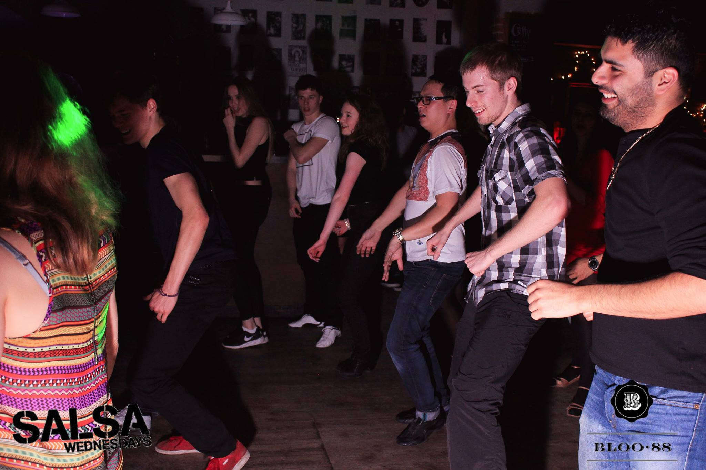

Group dances are found in a number of styles and genres, to a wide vareity of music. Examples: are Afrobeats / Kuduro, Salsa Rueda where pairs sync their moves and change partners regularly, linedancing, solo-swing jazz.
